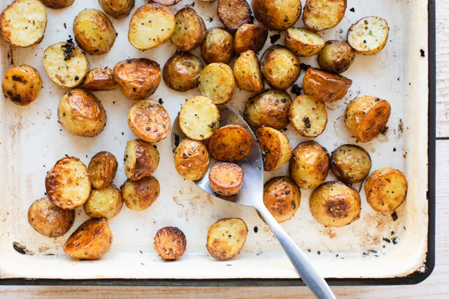

Baked New Potatoes

Delicious batch of oven roasted new potatoes
This recipe transforms your dull new potatoes into bite sized pieces of savory goodness.
Ingredients
- 1 1/2 pound new potatoes, halved
- 1/4 teaspoon kosher salt
- Freshly ground black pepper, to taste
- 2 tablespoons extra virgin olive oil
- 1 to 2 teaspoons fresh rosemary, minced
- 2 teaspoons minced garlic